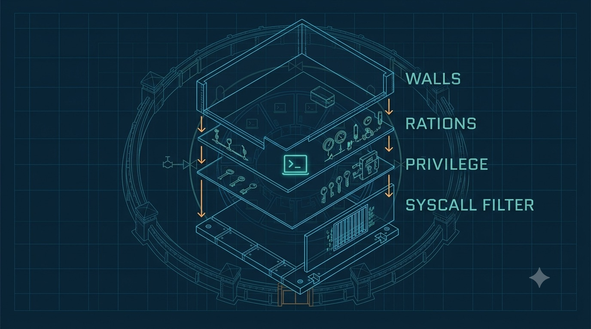

The Cell Assembled: What a Container Really Is
Here's the secret every warden eventually learns: there is no such thing as a container. The kernel has no "container" object, no create_container() syscall. What we call a container is a cell we assemble from the primitives in the last five chapters — namespaces for the walls, cgroups for the rations, capabilities and seccomp for privilege and syscalls, pivot_root for the ground. Bolt them together in the right order and you have a cell. That's the whole trick.

A technical blueprint-style exploded-assembly diagram on a deep navy ground with a faint cyan grid, showing a prison cell being assembled from stacked transparent layers, like an engineering parts-diagram. Each layer is a labeled pane sliding into place around a small glowing terminal glyph (>_) at the center: an outer layer of walls, a layer of gauges/valves (rations), a layer of keys (privilege), a layer of a barred window (syscall filter), and a floor plate. Clean vector line-art, engineering-schematic aesthetic, cyan (#46b1e0) and soft teal (#7fd1c8) linework on navy (#0c2233), amber (#f0a15a) accents on the assembly arrows, generous whitespace, no readable body text baked in. Target size ~1280x720px, 16:9 landscape; compose for an on-page figure with the subject centered and safe margins — it is letterboxed into a 16:9 box, so keep nothing important near the edges.
Generate this with your image agent, then drop the file here.
The build order
A low-level runtime like runc follows roughly this sequence to stand up a cell before letting the inmate's program run:
- Parse the spec (the OCI config — see below).
clone/unsharethe configured namespaces — build the walls.- Set up the cgroups — assign the rations.
- Mount the root filesystem, then
pivot_rootinto it — lay the ground. - Drop capabilities to the allowlist and install the seccomp filter — confiscate keys, post the guard.
execvethe target program — the inmate finally arrives, into a cell already sealed.
execve. Arm the locks after the prisoner is inside and there's a window, however brief, where they held keys you meant to confiscate. Assemble the cell empty; admit the inmate last.runc and the OCI spec: a blueprint everyone shares
runc is the reference low-level runtime, and it implements the OCI Runtime Specification — a vendor-neutral, written definition of exactly what a cell is: which namespaces, which cgroup limits, which capabilities, which seccomp profile, which mounts and hooks, and the process to exec. Docker, containerd, and CRI-O all sit on top of runc. When you write a Dockerfile, it eventually becomes an OCI config, and runc reads that blueprint and assembles the cell.
Try this
Peek at a real blueprint. The OCI config is just JSON describing the cell:
$ runc spec # writes a starter config.json $ jq '.linux.namespaces[].type, .process.capabilities.bounding' config.json "pid" "network" "ipc" "uts" "mount" [ "CAP_AUDIT_WRITE", "CAP_KILL", "CAP_NET_BIND_SERVICE" ]
Five walls and a short list of keys — everything else confiscated. That JSON is the cell.
Rootless: the whole cell, no host privilege
The strongest assembly for untrusted code adds the user namespace from Chapter 2. In a rootless container, an unprivileged user is root inside the cell and a nobody outside. Privileged syscalls the inmate genuinely needs — like setting up networking — are handled through seccomp user-notification (Chapter 5): the inmate is frozen, a trusted supervisor performs the action, and hands back the result. No real host power is ever delegated to the inmate.
Sources: OCI Runtime Spec v1.1; OCI config-linux.md; seccomp_unotify(2).